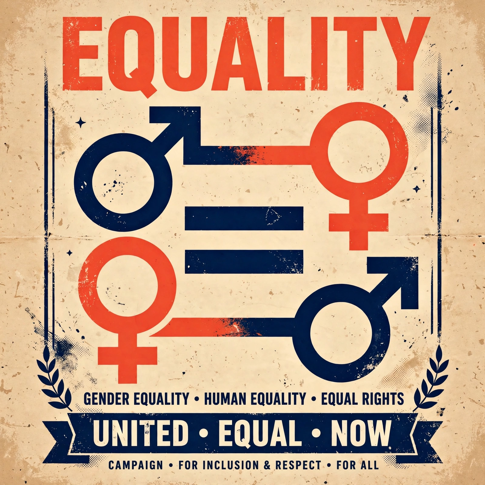

Gender equality, also known as sexual equality or equality of the sexes, is the state of equal ease of access to resources and opportunities regardless of gender, including economic participation and decision-making, and the state of valuing different behaviours, aspirations, and needs equally, regardless of gender. It is a central goal of feminism and a stated objective of the United Nations, whose Sustainable Development Goal 5 is devoted to achieving gender equality and empowering all women and girls.
The modern movement for gender equality developed out of the women's suffrage campaigns of the 19th and early 20th centuries and expanded during second-wave feminism in the 1960s and 1970s, which addressed employment, education, reproductive rights, and legal equality. International milestones include the Convention on the Elimination of All Forms of Discrimination against Women (CEDAW, 1979) and the Beijing Declaration and Platform for Action (1995).
Measured disparities persist in many societies in political representation, pay and occupational distribution (the gender pay gap), the division of unpaid household and care work, access to education in some regions, and exposure to gender-based violence. Analysts use composite indices, such as the World Economic Forum's Global Gender Gap Report and the UN's Gender Inequality Index, to compare countries; Nordic countries are frequently ranked highest.
Policies associated with gender equality include anti-discrimination and equal-pay legislation, parental-leave schemes available to all parents, quotas or targets for political and corporate representation, and measures against violence and harassment. Debates continue over the proper scope of such measures, over the distinction between equality of opportunity and equality of outcome, and over how gender interacts with other social categories — a theme developed in the theory of intersectionality.
See also: Feminism · Gender pay gap · Women's suffrage